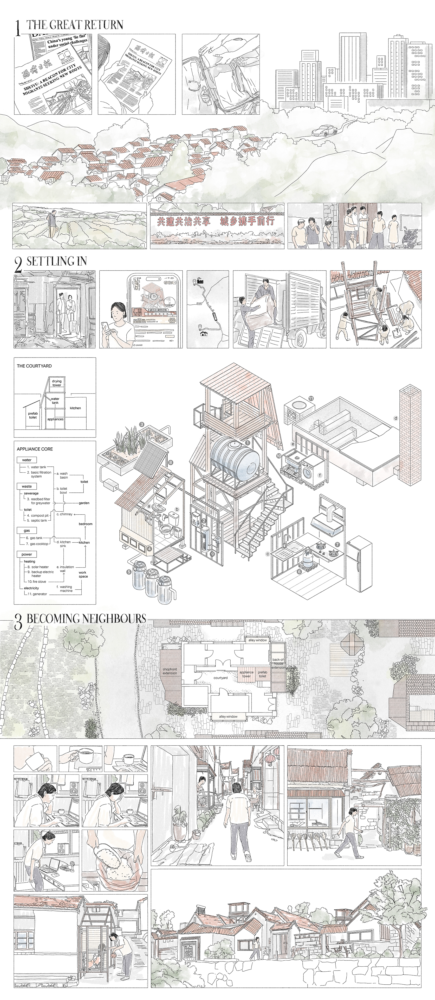

Where the Countryside Thrives:
A Domestic Guide for Rural Renewal
Where the Countryside Thrives is an architectural design project set in Shuiyu Village, Northern China. It responds to the fading of traditional village life and asks: what might a new kind of rural living look like today?
Rather than seeing the countryside as a place left behind, this proposal imagines it as a site of innovation—where former villagers, city migrants, and new livelihoods intersect. The design introduces domestic-scale interventions that support both urban remote work and local engagement, weaving private life and public exchange together.
Through housing, shared courtyards, and flexible spaces, Homegrown Futures offers a spatial framework for collaboration, negotiation, and care. It’s not a nostalgic return, but a forward-looking idea of how architecture can help the countryside thrive again.
1 Remaking Shuiyu
The design reshapes the village’s topography to mediate between the tower block, old homes, and farmland. Stone ruins become shared agricultural amenities, and a new viewing slope reconnects the village with its mountainous backdrop.

2 Village Centres
Three key public spaces anchor community life: a convenience store and nursery at the village entrance, a revitalised theatre stage for performances and dancing, and a waterside wash-and-weave pavilion. These hubs support both everyday routines and social gathering.

3 Two Households
Stories of two hybrid households reveal the frictions and negotiations of shared living: one family returns from the city to raise a child, while another home becomes a semi-informal co-living setup between a landlady and two urban youths.

4 The Great Return
A speculative comic and schematic plans depict the process of urban return. Modular appliance towers enable flexible domesticity, while shared amenities and altered property lines support both autonomy and embeddedness in a shifting rural landscape.
